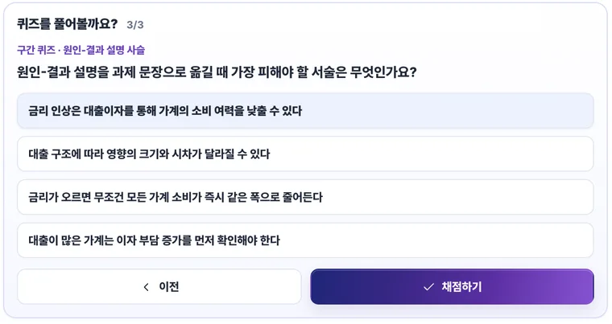
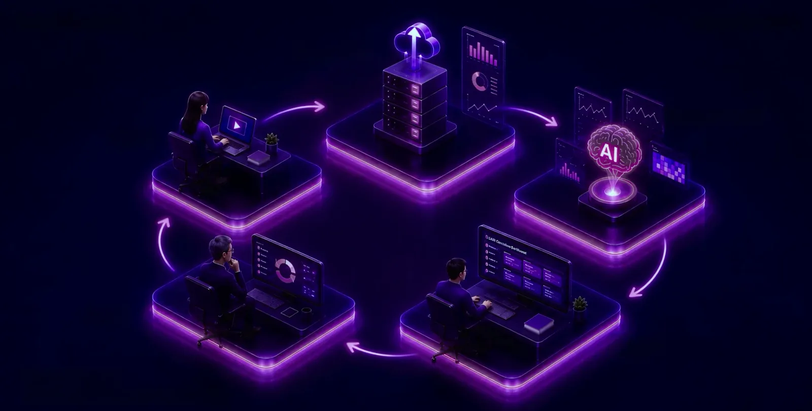
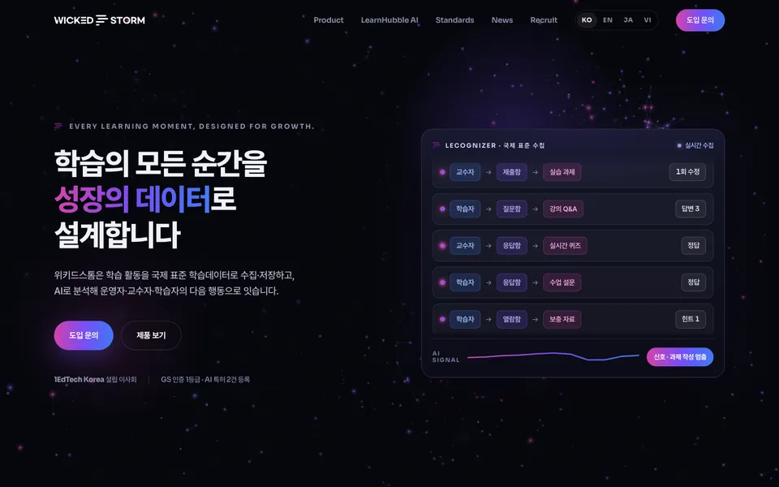
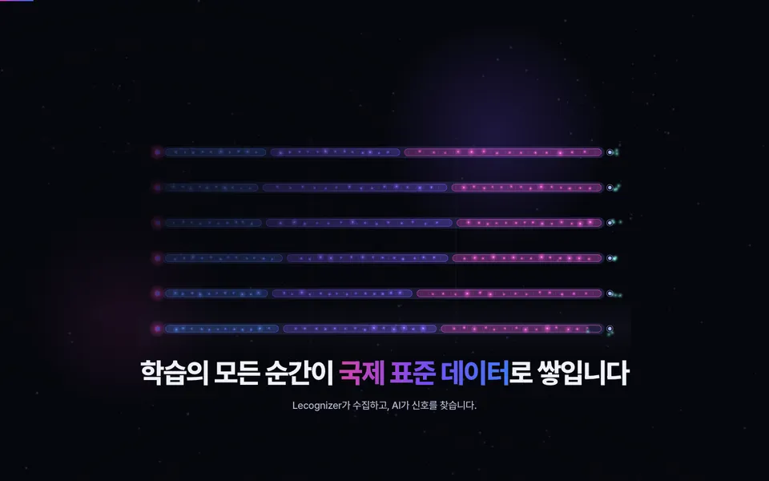
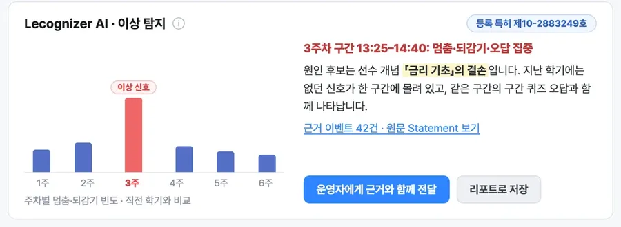
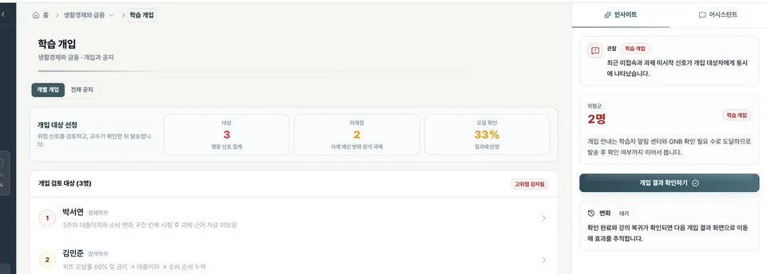
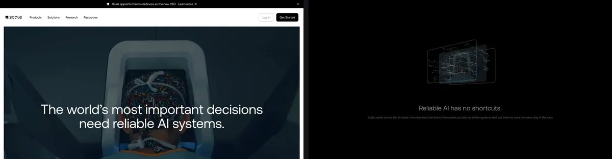
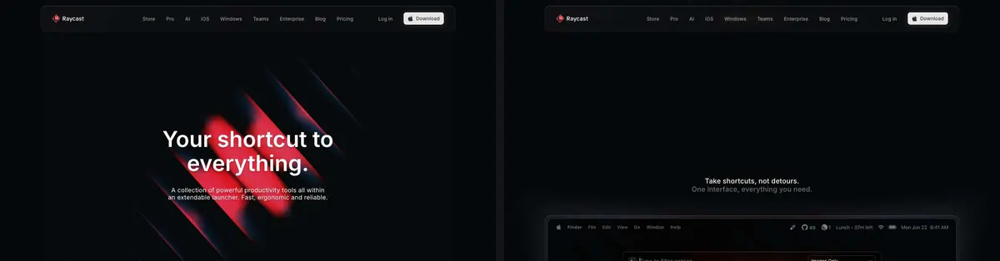
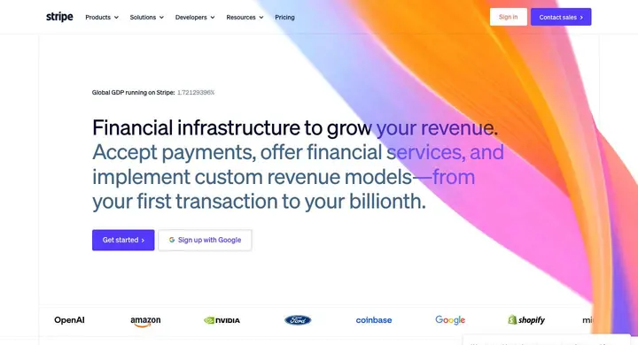
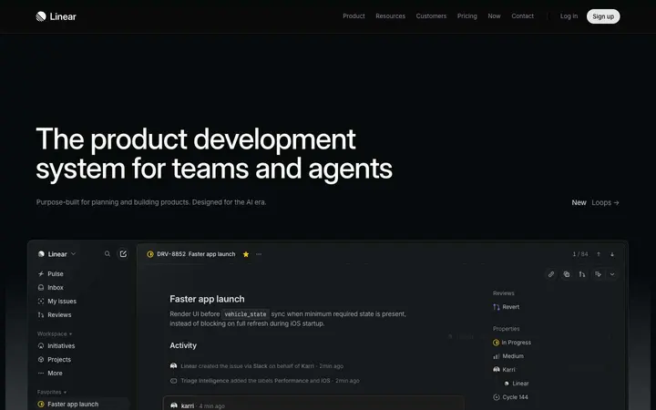

학습의 모든 순간을
성장의 데이터로
설계합니다

학습의 모든 순간을 성장의 데이터로 설계합니다
어두운 무대에 한 학습자의 강의실 화면(LearnHubble AI 구간 퀴즈)이 떠 있습니다. 첫 화면에서 가장 먼저 그려지는 것은 제목 글자라 가장 빨리 뜹니다.
폰 제목 아래에 퀴즈 카드만 크게.
한 학습자의 응답 하나가 국제 표준 데이터가 되고, Lecognizer AI의 신호가 되고, 교수자의 판단을 거쳐 다음 학기 수업이 되기까지를 하나의 이야기로 보여 주는 홈페이지를 제안합니다. 이야기의 끝은 실제 제품 화면과 도입 문의입니다.



max-age=600).그대로 가져갈 것: 브랜드 그라디언트와 어두운 톤, 오늘 정한 제품 색(Lecognizer 계열은 마젠타 쪽, LearnHubble AI는 파랑 쪽), 문구 정본과 네 언어 용어표, 기업영상의 3D 장면, 선순환 그림, 소식 생성 흐름, 문의 폼 서버.
답해 주신 목적 네 가지를 모두 겨냥합니다. 목적마다 사이트가 맡는 일을 나눴습니다.
| 목적 | 새 사이트가 하는 일 |
|---|---|
| 공공·교육청 신뢰 | 첫 화면 아래 증빙 한 줄, 인증서·특허증 원본을 보여 주는 신뢰 페이지, 웹 접근성 기준 준수 |
| 도입·시연 문의 | 이야기 끝에서 바로 문의, 역할별(운영자·교수자·학습자) 제품 경로, 목적별로 시작하는 문의 |
| 해외 파트너·박람회 | 네 언어 모두 같은 품질의 폰 화면, QR로 들어온 방문자를 위한 베트남어 첫 화면 |
| 채용·기술 브랜드 | 사이트의 완성도 자체가 기술력의 증거. 표준 활동과 기술 글을 한곳에 |
고르신 두 톤은 이렇게 나눠 씁니다. 데이터 아트는 오프닝 한 곳에서 크게 쓰고, 진짜 데이터 구조로만 그립니다. 빛 입자 하나가 xAPI 문장 하나이고, 입자가 모이는 자리는 1EdTech CASE 성취 항목이며, 색은 활동 종류(시청·응답·제출·질문)를 뜻합니다. 들여다보면 회사가 하는 일이 그대로 보이는 그림입니다. 제품·증거·문의 구간은 여백과 큰 글자로 조용하게 둡니다.
데스크톱은 화면을 고정해 두고 스크롤로 장면을 넘깁니다(GSAP 핀·스크럽). 폰은 같은 여섯 장면을 세로로 이어 붙이고, 장면이 화면에 들어오면 그 안의 움직임만 재생합니다. 화면 속 인물·교과·수치는 모두 시연용입니다.
학습의 모든 순간을
성장의 데이터로
설계합니다

어두운 무대에 한 학습자의 강의실 화면(LearnHubble AI 구간 퀴즈)이 떠 있습니다. 첫 화면에서 가장 먼저 그려지는 것은 제목 글자라 가장 빨리 뜹니다.
폰 제목 아래에 퀴즈 카드만 크게.
http://adlnet.gov/expapi/verbs/answered
퀴즈 답을 누른 순간, 그 클릭이 xAPI 문장으로 펼쳐집니다. 누가, 무엇을 했고, 무엇에, 결과는 어땠는지, 어느 교육과정 맥락(1EdTech CASE)인지. 실제 동사 주소까지 보여 줍니다.
폰 문장 조각이 한 줄씩 차례로 붙습니다.
오늘 수집 · 시연용1,374
수천 개의 문장이 빛 입자가 되어 Lecognizer로 흘러 들어가, 교과역량 체계(CASE) 모양으로 스스로 자리를 잡습니다. 데이터 아트가 가장 크게 보이는 장면입니다.
폰 미리 그린 체계 그림 위로 입자 몇십 개만 흐릅니다.

체계의 한 항목이 밝아지고, 입자들이 주차별 막대로 모여 3주차가 솟습니다. 그대로 실제 Lecognizer AI 이상 탐지 화면으로 착지합니다. 원인 후보는 선수 개념 '금리 기초'의 결손입니다.
폰 막대 차트와 원인 한 줄만 크게.

신호가 근거와 함께 LearnHubble AI의 운영자·교수자 화면에 도착하고, 교수자는 보충 구간을 설계합니다. AI는 찾고 제안하며, 적용은 사람이 정한다는 회사의 원칙을 그대로 보여 주는 장면입니다.
폰 알림 카드 한 장, 이어서 보충 구간 카드.
이번 학기의 학습데이터가
다음 학기 교육을 설계합니다
학습자 화면에 보충 자료와 AI 힌트가 뜨고, 원이 닫히며 학습의 선순환 그림으로 물러납니다. 바로 아래 도입 문의와 시연 요청이 있습니다.
폰 선순환 그림과 버튼 두 개.
지금의 히어로, 히어로 캡션, 파이프라인 네 단계, 파이프라인 애니메이션은 이 여섯 장면으로 합쳐지고, 선순환 그림은 여섯째 장면이 됩니다. 이야기 한 번이 지금의 네 섹션을 대신하므로 페이지는 오히려 짧아집니다.
맨 아래 층만으로도 이야기가 완결되고, 성능이 되는 기기에서만 위층을 더합니다.
| 층 | 누가 보나 | 오프닝을 그리는 방식 |
|---|---|---|
| 기본 | 모든 방문자, '움직임 줄이기', 아이폰 저전력 모드 | 장면마다 미리 그린 그림과 HTML 글자, 짧은 CSS 움직임만 |
| 캔버스 | 성능이 낮은 PC와 태블릿 | 입자 2천~3천 개로 같은 장면을 2D로 |
| WebGL | 데스크톱, 고성능 태블릿 | 입자 2만~5만 개가 스크롤에 맞춰 체계와 막대로 모임(OGL, 약 33KB) |
홈은 여섯 장면 → 증빙 한 줄 → 제품(Lecognizer 계열과 LearnHubble AI, 운영자·교수자·학습자 탭) → 표준 → 사례 → 소식 → 회사·채용 → 문의·자료 순서입니다. 제품, 표준, 사례, 신뢰(인증서·특허증·표준 활동·보안·개인정보), 소식, 채용, 문의는 각각 페이지를 두고, 네 언어 모두 같은 구조로 만듭니다. 메뉴는 제품 · 표준 · 사례 · 소식 · 회사 · 도입 문의, 언어 선택은 원어 이름(한국어 · English · 日本語 · Tiếng Việt)으로 씁니다.
| 지금 | 새 사이트 |
|---|---|
| 제품 캡처 이미지 | HTML로 다시 그린 제품 화면 조각(Statement 실시간 목록, 이상 신호 차트, 역량맵, 강의실 AI 힌트). 언어가 바뀌고 폰용 구성이 따로 있습니다. |
| 표준 카드 10장 | 표준 지도 한 장. 수집(xAPI·Caliper), 체계(CASE), 증명(Open Badges·CLR·Digital Credentials), 연동(EduAPI·OneRoster·LTI·QTI)으로 묶고 적용, 적용 예정, 설계 참조를 한눈에. |
| 레퍼런스 카드 4장 | 사례 페이지(기관, 연도, 한 일, 결과). 홈에는 기관 로고 한 줄과 대표 사례 셋. |
| 연혁 전체 | 주요 이정표 여섯 개. 전체 연혁은 회사 페이지로. |
| 자료 받기와 문의가 따로 | 목적별 시작(도입 상담, 시연 요청, 파트너십·해외)과 자료 받기를 한곳에. |
오늘 PR #1에서 8개 폭(360~1920px)을 측정해 고친 기준을 새 사이트의 규칙으로 삼습니다. 390px 폰에서 페이지 길이는 19,786px에서 15,644px로 21% 줄었고, 태블릿에서 5~10px까지 작아지던 그림 속 글자는 모두 목록이나 HTML로 바꿨습니다.
| 폰 (699px 이하) | 태블릿 (700~1023px) | 데스크톱 (1024px 이상) | |
|---|---|---|---|
| 오프닝 | 여섯 장면을 세로로, 화면 고정 없음 | 폰과 같은 방식, 화면을 크게 | 화면 고정 + 스크롤로 장면 넘김 |
| 제품 화면 | 핵심 패널만 폰용으로 다시 구성 | 2열 | 원래 비율 |
| 같은 종류 묶음 | 가로로 넘기기(다음 카드가 살짝 보임) | 3열 | 3열 |
| 긴 목록 | 주요 항목 + 펼치기, 또는 2열 | 2열 | 5열까지 |
| 누르는 곳 | 44px 이상 | 44px 이상 | 마우스 기준 |
| 글자 | 본문 15px 이상, 그림 속 글자 없음 | 그림 속 글자 없음 | 그림 속 글자는 11px 이상 |
폰이 먼저인 곳은 하노이 QR, 인스타그램 링크, 이동 중인 담당자입니다. 데스크톱이 먼저인 곳은 공공 평가와 도입 검토 회의입니다. 오프닝은 폰에서 먼저 완성하고, 데스크톱에서 연출을 더하는 순서로 만듭니다.
증빙 한 줄. 첫 화면 바로 아래에 (사)1EdTech Korea 설립 이사회 · GS 인증 1등급(Lecognizer) · 특허 제10-2883249호 · 제10-2767110호를 한 줄로 두고, 각 항목은 신뢰 페이지의 원본으로 연결합니다. 연혁에 있는 나라장터 등록 같은 항목도 원본이 있으면 같은 줄에 더합니다. 좋은 B2B 사이트들은 인증을 배지 벽이 아니라 이렇게 글 한 줄과 링크로 보여 줍니다(Supabase, Docebo).
웹 접근성 품질인증. 새 사이트는 KWCAG 2.2 기준으로 만들고, 공개 뒤 웹 접근성 품질인증 심사를 받는 것을 권합니다. 공공 영업에서 회사 홈페이지의 인증마크는 그 자체로 신뢰 신호입니다. 스크롤 이야기도 멈춤, 키보드 이동, 장면별 글 설명, 명도 대비 4.5:1을 지키도록 설계합니다.
숫자 규칙. 화면 속 시연 수치는 성과로 쓰지 않고 시연용으로 표시합니다. 성과 숫자는 사례 페이지에서 기관과 연도를 붙여 씁니다.
wickedstorm.kr/vi/?utm_source=fair&utm_medium=print&utm_campaign=vietedu2026. 베트남 방문자용 문의 채널(Zalo)을 열지는 정해 주셔야 합니다.| 영역 | 선택 | 이유 |
|---|---|---|
| 빌드 | Astro(정적 출력) + TypeScript | 네 언어 공통 레이아웃, 이미지 자동 변환(AVIF·WebP), 필요한 곳에만 JS. GitHub Pages에도 그대로 배포됩니다. |
| 스크롤 연출 | GSAP 3.13(ScrollTrigger·SplitText), Lenis는 데스크톱만 | 2025년 4월부터 모든 플러그인이 상업용 무료. 지금 쓰는 도구라 그대로 이어 씁니다. |
| 데이터 아트 | OGL(WebGL2)에서 캔버스, 그림 순으로 대체 | OGL은 약 33KB로 three.js(약 181KB)보다 가볍고, 입자와 막대에는 충분합니다. |
| 페이지 전환 | CSS View Transitions | Chrome 126, Safari 18.2부터. 지원하는 브라우저에서만 부드럽게 넘어갑니다. |
| 콘텐츠 | 소식·사례·표준·제품을 언어별 콘텐츠 파일로 | 지금의 posts.json과 관리 화면을 그대로 읽습니다. |
| 문의 | 지금의 문의 서버(Lambda) | 이미 운영 중이고 스팸 방지가 들어 있습니다. |
| 호스팅 | Cloudflare Pages 권장, GitHub Pages 유지도 가능 | GitHub Pages는 모든 파일 캐시가 10분으로 고정입니다. Cloudflare는 캐시 기간을 정할 수 있고 베트남 등 아시아 전송망이 있으며 무료입니다. |
자동 점검. 저장소에 올릴 때마다 폭 8개와 언어 4개 조합에서 가로 넘침, 최소 글자 크기, 누르는 곳 크기를 검사합니다(오늘 쓴 측정 스크립트를 그대로 테스트로). 여기에 Lighthouse(폰 LCP 2.5초 이하, CLS 0.1 이하), axe 접근성 검사, 깨진 링크 검사를 더합니다. 첫 로드 JS는 90KB(gzip) 안으로, WebGL은 첫 화면이 뜬 뒤 성능이 되는 기기에서만 불러옵니다.
| 단계 | 기간 | 하는 일 | 끝났다고 보는 기준 |
|---|---|---|---|
| 0 | 완료 | PR #1: 문구·색·네 언어·폰과 태블릿 화면. 하노이는 이 사이트로 | 병합만 남음 |
| 1 | 9.28~10.2 | 새 저장소에 Astro 뼈대, 디자인 토큰, 네 언어 경로, 자동 점검. 지금 문구·번역·소식 이전 | 지금 사이트와 같은 내용이 새 구조로 뜸 |
| 2 | 10.5~10.14 | 오프닝 여섯 장면 시제품(데스크톱 WebGL·캔버스, 폰 장면) | 하노이 전 대표 검토 한 번 |
| 하노이 | 10.15~10.18 | VIETEDU 2026. 현재 사이트 운영, 시제품은 부스 화면용으로 쓸 수 있음 | |
| 3 | 10.19~10.30 | HTML 제품 화면 조각, 증빙·신뢰 페이지, 표준 지도, 사례, 문의 | 네 언어 화면 점검 통과 |
| 4 | 11.2~11.6 | 번역 검수, 접근성·성능 점검, 도메인 전환 준비 | 자동 점검 전부 통과 |
| 공개 | 11.9 주 | wickedstorm.kr 전환 |
번호로 답해 주시면 됩니다. 각 항목의 권장안으로 1단계를 시작해 둘 수 있습니다.
39개 사이트를 데스크톱과 아이폰 크기로 직접 열어 오프닝, 쓰는 기술, 첫 화면에 먼저 그려지는 것을 확인했습니다. 그중 새 오프닝에 바로 가져올 넷입니다.

Scale AI실사 한 장이 스크롤에 따라 겹겹의 3D 데이터 층으로 갈라집니다. 장면 1에서 3까지의 뼈대이고, 폰에서도 장면을 유지합니다(three.js, GSAP, Lenis).
scale.com
Raycast빛나는 조형이 스크롤하면 실제 제품 창으로 바뀝니다. 지금 막대에 없는 '착지'가 이것입니다. 장면 4의 기준입니다.
raycast.com
Stripe제목 위에 실시간 숫자를 두고, WebGL보다 먼저 정지 그림을 그려 첫 화면을 빠르게 띄웁니다. '오늘 수집' 숫자와 기본 층의 기준입니다.
stripe.com
Linear실제 제품 화면을 HTML로 그려 첫 화면에 둡니다. 새 사이트의 제품 화면 조각을 만드는 기준입니다.
linear.app참고 사이트 화면은 2026년 9월 25일 조사 때 캡처했습니다. 브라우저 지원 범위는 MDN 호환성 데이터, 파일 크기는 bundlephobia 기준입니다.